Konfigurieren von EB-Formaten zur Verwendung von Parametern, die pro juristischer Person angegeben werden
[!include[banner](../includes/banner.md)]Übersicht
In vielen der Elektronischen Berichterstellungs(EB)-Formate, die Sie gestalten, müssen Sie Daten mithilfe einer Gruppe von Werten filtern, die für jede juristische Person Ihrer Instanz (zum Beispiel, eine Gruppe von Steuercodes, um Steuertransaktionen zu filtern) spezifisch sind. Wenn dieser Typ momentan in einem EB-Format gefiltert wird, werden Werte, die von der juristischen Person abhängig sind (zum Beispiel Steuercodes) in Ausdrücken des EB-Formats verwendet, um Datenfilterungsregeln anzugeben. Daher wird das EB-Format an die juristischen Person angepasst. Um die erforderlichen Berichte zu erzeugen, müssen Sie abgeleitete Kopien des ursprünglichen EB-Formats für jede juristische Person erstellen, für die Sie das EB-Format ausgeführt haben. Jedes abgeleitete EB-Format muss bearbeitet werden, um Werte speziell für die juristische Person dort hinzuzufügen. Es muss umbasiert werden, sobald die ursprüngliche (Basis-)Version aktualisiert, sie aus einer Testumgebung exportiert und in eine Produktionsumgebung importiert wurde, wenn sie für die Verwendung in der Produktion bereitgestellt werden muss usw. Daher ist die Wartung dieses Typs der konfigurierten EB-Lösung aus verschiedenen Gründen ziemlich komplex und zeitaufwändig:
- Je mehr juristische Personen vorhanden sind, desto mehr EB-Formatkonfigurationen müssen verwaltet werden.
- Die Verwaltung von EB-Konfigurationen setzt voraus, dass geschäftliche Benutzer EB-Wissen haben.
Mit der anwendungsspezifischen EB-Parameterfunktion können Poweruser die Datenenfilterung in einem EB-Format konfigurieren, damit sie auf einer Gruppe von abstrakten Regeln basiert. Diese Gruppe von Regeln kann so konfiguriert werden, dass sie die Datenquellen nutzt, die in einem EB-Format verfügbar sind. Geschäftliche Benutzer können echte Regeln über das EB-Rahmenwerk hinaus angeben, indem sie die Benutzeroberfläche, die automatisch anhand der Einstellungen des entsprechenden EB-Formats erzeugt wird, und die aktuellen Daten der juristischen Person verwenden, auf die über die Datenquellen des EB-Formats zugegriffen werden kann. Die Gruppe von Regeln, die für ein EB-Format angegeben ist, kann aus der aktuellen juristischen Person der Dynamics 365 Finance (Finance)-Instanz exportiert werden. Sie können dann in eine andere juristische Entität entweder derselben Finance-Instanz oder eine andere Instanz als Gruppe von Regeln für dasselbe EB-Format importiert werden.
Voraussetzungen
Um die Beispiele in diesem Thema abzuschließen, müssen Sie für eine der folgenden Rollen Zugriff auf die Instanz des Regulatory Configuration Service (RCS) haben, der für denselben Mandanten wie Finance bereitgestellt wurde:
- Entwickler für elektronische Berichterstellung
- Funktionaler Berater für elektronische Berichterstellung
- Systemadministrator
Es wird empfohlen, dass Sie die Schritte im Thema Unterstützen parametrisierter Aufrufe von EB-Datenquellen des Typs BERECHNETES FELD ausführen. Wenn Sie diese Schritte bereits abgeschlossen haben, können Sie die Schritte im Abschnitt Importieren von EB-Konfigurationen in RCS überspringen, der darauf folgt.
Importieren von EB-Konfigurationen in RCS
Laden Sie die Zip-Datei Unterstützen parametrisierter Aufrufe von EB-Datenquellen des Typs BERECHNETES FELD im Microsoft Download Center herunter. Diese Zip-Datei enthält die folgenden EB-Konfigurationen, die lokal extrahiert und gespeichert werden müssen.
| Inhaltsbeschreibung | Dateiname |
|---|---|
| Beispiel-EB-Datenmodell-Konfigurationsdatei | Model to learn parameterized calls.version.1.xml |
| Beispiel-EB-Metadaten-Konfigurationsdatei | Metadata to learn parameterized calls.version.1.xml |
| Beispiel-EB-Modellzuordnungs-Konfigurationsdatei | Mapping to learn parameterized calls.version.1.1.xml |
| Beispiel-EB-Formatkonfiguration | Format to learn parameterized calls.version.1.1.xml |
Melden Sie sich als Nächstes bei Ihrer RCS-Instanz an.
In diesem Beispiel erstellen Sie eine Konfiguration für das Beispielunternehmen Litware, Inc. Bevor Sie diese Prozedur abschließen können, müssen Sie zunächst die Schritte im RCS-Thema Konfigurationsanbieter erstellen und als aktiv markieren abschließen.
Wählen Sie im Standard-Dashboard Elektronische Berichterstellung aus.
Wählen Sie Berichterstellungskonfigurationen aus.
Importieren Sie die EB-Konfigurationen, die Sie zuvor in RCS heruntergeladen haben, in der folgenden Reihenfolge: Datenmodell, Metadaten, Modellzuordnung und Format. Führen Sie für jede EB-Konfiguration die folgenden Schritte aus:
- Wählen Sie Wechselkurs aus.
- Wählen Sie Aus XML-Datei laden aus.
- Wählen Sie Durchsuchen aus, um die Datei für die erforderliche EB-Konfiguration im XML-Format auszuwählen.
- Wählen Sie OK.
Überprüfen der bereitgestellten EB-Lösung
Erweitern Sie in der Konfigurationsstruktur die Inhalte des Elements Modell zum Ermitteln parametrisierter Aufrufe.
Wählen Sie das Element Format zum Ermitteln parametrisierter Aufrufe aus.
Wählen Sie Designer aus.
Wählen Sie Erweitern/Reduzieren aus.
Das EB-Format Format zum Ermitteln parametrisierter Anrufe ist so gestaltet, dass ein Steuerauszug im XML-Format erzeugt wird, der verschiedene Besteuerungsstufen (regulär, reduziert und keine) enthält. Jede Stufe hat eine andere Anzahl von Details.
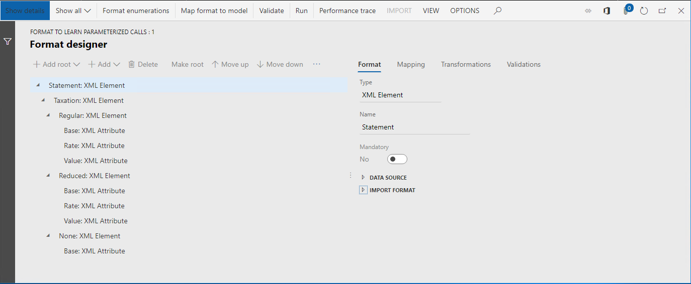
Erweitern Sie auf der Registerkarte Zuordnung die Elemente Modell, Daten und Zusammenfassung.
Die Datenquelle Model.Data.Summary gibt die Liste der Steuertransaktionen zurück. Diese Transaktionen werden anhand des Steuercodes zusammengefasst. Für diese Datenquelle wurde das berechnete Feld Model.Data.Summary.Level so konfiguriert, dass es den Code für die Besteuerungsstufe jedes zusammengefassten Datensatzes zurückgibt. Für jeden Steuercode, der zur Laufzeit aus der Datenquelle Model.Data.Summary abgerufen werden kann, gibt das berechnete Feld den Besteuerungsstufencode (Regulär, Reduziert, Keine oder Sonstige) als Textwert zurück. Das berechnete Feld Model.Data.Summary.Level wird verwendet, um Datensätze der Datenquelle Model.Data.Summary zu filtern, und geben Sie die gefilterten Daten in jedes XML-Element ein, das eine Besteuerungsstufe darstellt, indem Sie die Felder Model.Data2.Level1, Model.Data2.Level2 und Model.Data2.Level3 verwenden.
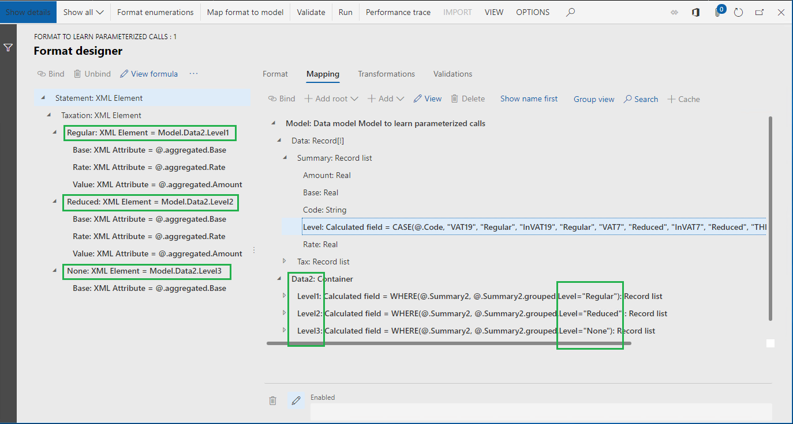
Das berechnete Feld Model.Data.Summary.Level wurde so konfiguriert, dass es einen EB-Ausdruck enthält. Beachten Sie, dass Steuercodes (VAT19, InVAT19, VAT7, InVAT7, THIRD und InVAT0) in dieser Konfiguration hartcodiert sind. Daher hängt dieses EB-Format von der juristischen Person ab, in der diese Steuercodes konfiguriert wurden.
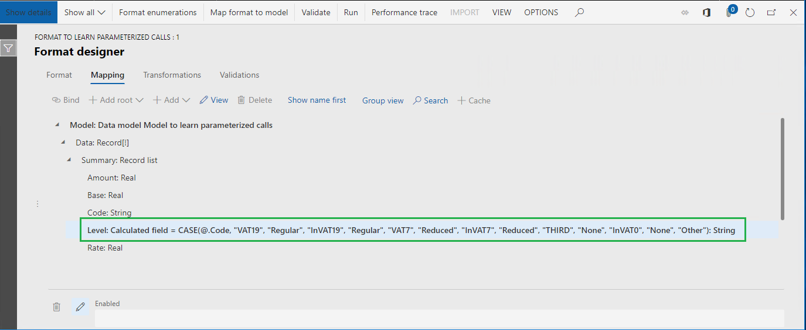
Um einen andere Gruppe von Steuercodes für die einzelnen juristischen Person zu unterstützen, müssen die folgenden Schritte ausgeführt werden:
- Erstellen Sie eine abgeleitete Version des EB-Formats für jede juristische Person.
- Aktualisieren Sie die Steuercodes im berechneten Feld Model.Data.Summary.Level basierend auf den Einstellungen für die juristische Person.
Seite Format-Designer schließen.
Erstellen eines abgeleiteten Formats
Verwenden Sie als Nächstes die anwendungsspezifische EB-Parameterfunktion, um eine andere Gruppe von Steuercodes für jede juristische Person in einem einzelnen EB-Format zu unterstützen.
- Erweitern Sie in der Konfigurationsstruktur die Inhalte des Elements Modell zum Ermitteln parametrisierter Aufrufe.
- Wählen Sie das Element Format zum Ermitteln parametrisierter Aufrufe aus.
- Wählen Sie Konfiguration erstellen.
- Wählen Sie die Option Von Name ableiten: Formatieren zum Ermitteln parametrisierter Aufrufe, Microsoft aus.
- Geben Sie im Feld Name Format zum Ermitteln der Vorgehensweise bei der Suche von Daten zu juristischen Personen ein.
- Wählen Sie Konfiguration erstellen.
Konfigurieren eines abgeleiteten Formats
Hinzufügen einer Formatenumeration
Danach fügen Sie eine neue EB-Formatenumeration hinzu. Die Werte dieser Formatenumeration werden geschäftlichen Benutzern dargestellt, die für die verschiedenen Besteuerungsstufen, die im EB-Format verwendet werden, Gruppen von Steuercodes angeben, die von der juristischen Person abhängig sind.
Wählen Sie Designer aus.
Wählen Sie Formatenumerationen aus.
Wählen Sie Hinzufügen aus.
Geben Sie im Feld Name Liste der Besteuerungsstufen ein.
Wählen Sie Speichern.
Wählen Sie auf der Registerkarte Formatenumerationswerte die Option Hinzufügen aus.
Geben Sie im Feld Name Reguläre Besteuerung ein.
Wählen Sie erneut Hinzufügen aus.
Geben Sie im Feld Name Reduzierte Besteuerung ein.
Wählen Sie erneut Hinzufügen aus.
Geben Sie im Feld Name Keine Besteuerung ein.
Wählen Sie erneut Hinzufügen aus.
Geben Sie im Feld Name Sonstige ein.
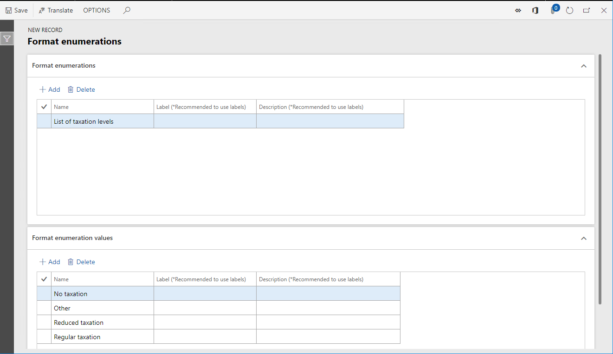
Da die geschäftlichen Benutzer möglicherweise unterschiedliche Sprachen verwenden, um Gruppen von Steuercodes anzugeben, die von der juristischen Person abhängig sind, empfiehlt es sich, die Werte dieser Enumeration in die Sprachen zu übersetzen, die als bevorzugte Sprachen für diese Benutzer in Finance konfiguriert werden.
Wählen Sie den Datensatz Keine Besteuerung aus.
Klicken Sie in das Feld Label.
Wählen Sie Übersetzen aus.
Geben Sie im Bereich Textübersetzung im Feld Beschriftungskennung LBL_LEVELENUM_NO ein.
Geben Sie im Feld Text in Standardsprache Keine Besteuerung ein.
Wählen Sie im Feld Sprache DE aus.
Geben Sie im Feld Übersetzter Text Keine Besteuerung ein.
Wählen Sie Übersetzen aus.
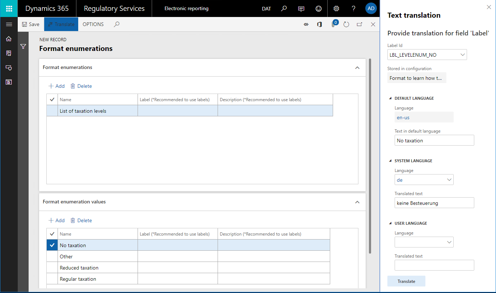
Wählen Sie Speichern.
Schließen Sie die Seite Formatenumerationen.
Hinzufügen einer neuen Datenquelle für die Suche
Danach fügen Sie eine neue Datenquelle hinzu, um anzugeben, wie geschäftliche Benutzer Regeln angeben, die von der juristischen Person abhängig sind, um die korrekte Besteuerungsstufe für jeden zusammengefassten Transaktionsdatensatz zu erkennen.
Wählen Sie auf der Registerkarte Zuordnung die Option Hinzufügen aus.
Wählen Sie Formatenumeration\Suche aus.
Sie haben gerade ermittelt, dass jede Regel, die geschäftliche Benutzer für die Erkennung der Besteuerungsstufe angeben, einen Wert einer EB-Formatenumeration zurückgibt. Beachten Sie, dass der Datenquellentyp Suche über Datenmodell und Dynamics 365 for Operations-Blöcke sowie den Block Formatenumeration aufgerufen werden kann. Daher können EB-Datenmodellenumerationen und Anwendungsenumerationen verwendet werden, um den Typ der Werte anzugeben, der für Datenquellen dieses Typs zurückgegeben wird.
Geben Sie im Feld Name Auswahl ein.
Wählen Sie im Feld Formatenumeration die Option Liste der Besteuerungsstufen ein.
Sie haben gerade angegeben, dass geschäftliche Benutzer für jede in dieser Datenquelle angegebene Regel einen der Werte der Formatenumeration Liste der Besteuerungsstufen als zurückgegebenen Wert auswählen müssen.
Wählen Sie Suche bearbeiten aus.
Wählen Sie Spalten aus.
Erweitern Sie das Element Model.
Erweitern Sie das Element Daten.
Erweitern Sie das Element Steuer.
Wählen Sie das Element Model.Data.Tax.Code aus.
Wählen Sie die Schaltfläche Hinzufügen (rechter Pfeil) aus.
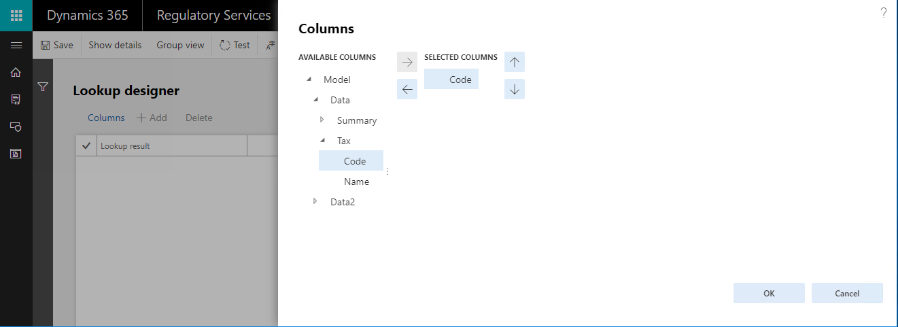
Sie haben gerade angegeben, dass geschäftliche Benutzer für jede in dieser Datenquelle für die Erkennung der Besteuerungsstufe angegebene Regel einen der Steuercodes als Bedingung auswählen müssen. Die Liste der Steuercodes, die geschäftliche Benutzer auswählen können, wird von der Datenquelle Model.Data.Tax zurückgegeben. Da diese Datenquelle das Feld Name enthält, wird der Name des Steuercodes für jeden Steuercodewert in der Suche angezeigt, der dem geschäftlichen Benutzer angezeigt wird.
Wählen Sie OK.
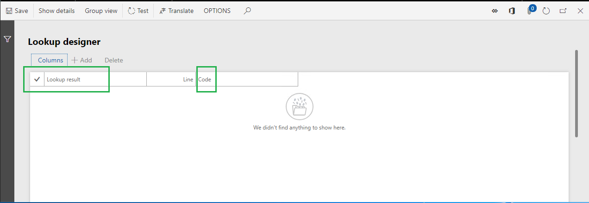
Geschäftliche Benutzer können mehrere Regeln als Datensätze dieser Datenquelle hinzufügen. Jeder Datensatz wird mithilfe eines Positionscodes nummeriert. Regeln werden mit zunehmender Positionsnummer ausgewertet.
Da Sie das Feld Steuercode als Bedingung für Regeln in dieser Suchdatenquelle ausgewählt haben und Steuercode als Feld des Datentyps Zeichenfolge eingerichtet ist, wird jede Regel während der Laufzeit ausgewertet, indem der Steuercode, der an die Datenquelle übergeben wird, mit dem Steuercode verglichen wird, der in diesem Datensatz der Datenquelle definiert wird.
Wenn eine Regel, die die konfigurierte Bedingung erfüllt, gefunden wird, gibt diese Datenquelle den Suchwert der Regel zurück, die im Feld Suchenergebnis definiert ist. Wenn keine Regel gefunden wird, wird eine Ausnahme ausgelöst, um den Benutzer zu informieren, dass die aktuelle Datenquelle keinen korrekten Wert zurückgegeben kann.
Wählen Sie Speichern.
Schließen Sie die Seite Such-Designer.
Wählen Sie OK.
Beachten Sie, dass Sie eine neue Datenquelle hinzugefügt haben, die die Besteuerungsstufe als Wert der Formatenumeration Liste der Besteuerungsstufen für jeden Steuercode zurückgibt, der an die Datenquelle als Argument des Parameters Code des Datentyps Zeichenfolge weitergegeben wird.
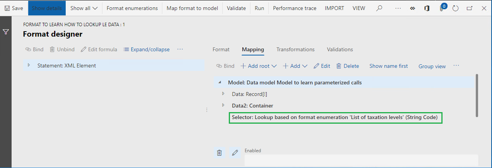
Beachten Sie, dass die Bewertung von konfigurierten Regeln vom Datentyp der Felder abhängt, die ausgewählt wurden, um die Bedingungen dieser Regeln zu definieren. Wenn Sie ein Feld auswählen, das als Feld des Datentyps Numerisch oder Datum konfiguriert wird, weichen die Kriterien von den Kriterien ab, die zuvor für den Datentyp Zeichenfolge beschrieben wurden. Für die Felder Numerisch und Datum muss die Regel als Wertebereich angegeben werden. Die Bedingung der Regel wird dann als erfüllt angesehen, wenn ein Wert, der an die Datenquelle weitergegeben wird, sich im konfigurierten Bereich befindet.
Die folgende Abbildung zeigt ein Beispiel für diesen Einrichtungstyp. Zusätzlich zu dem Feld Model.Data.Tax.Code des Datentyps Zeichenfolge wird das Feld Model.Tax.Summary.Base des Datentyps Gleitkommazahl verwendet, um die Bedingungen für eine Suchendatenquelle anzugeben.
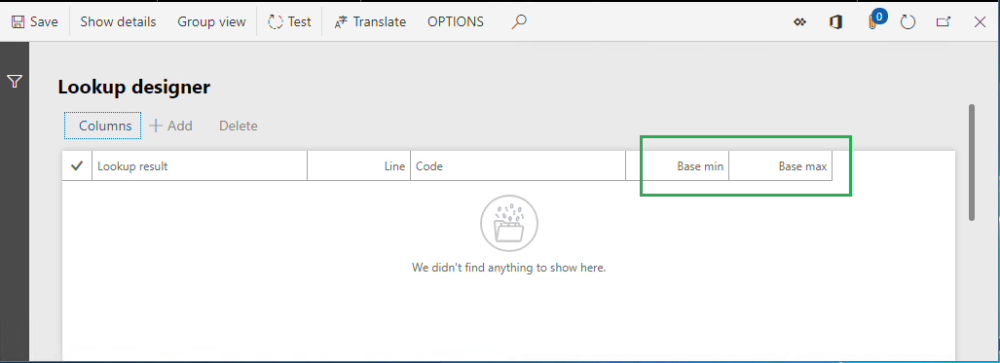
Da die Felder Model.Data.Tax.Code und Model.Tax.Summary.Base für diese Suchendatenquelle ausgewählt werden, wird jede Regel diese Datenquelle folgendermaßen konfiguriert:
- In der angezeigten Liste muss der Wert der Formatenumeration Liste der Besteuerungsstufen als zurückgegebener Wert ausgewählt werden.
- Der Steuercode muss als Bedingung dieser Regel eingegeben werden. Nur Steuercodes, die von der Datenquelle Model.Data.Tax bereitgestellt werden, sind verfügbar.
- Mindest- und Höchstwerte des Steuergrundlagebetrags müssen als Bedingungen dieser Regel eingegeben werden.
So wird jede Regel dieser Datenquelle während der Laufzeit ausgewertet:
- Entspricht der Code des Datentyps Zeichenfolge, der an diese Datenquelle weitergegeben wurde, dem Steuercode einer Regel?
- Fällt der Wert des Datentyps Gleitkommazahl, der an diese Datenquelle weitergegeben wurde, zwischen bestimmte Mindest- und Höchstwerte?
Eine Regel gilt als anwendbar, wenn beide Bedingungen erfüllt sind.
Übersetzen der Bezeichnung der Suchendatenquelle, die hinzugefügt wurde
Da die geschäftlichen Benutzer möglicherweise unterschiedliche Sprachen verwenden, um Gruppen von Steuercodes anzugeben, die von der juristischen Person abhängig sind, empfiehlt es sich, die Bezeichnung jeder Suchdatenquelle zu übersetzen, die Sie hinzufügen, damit sie in der bevorzugten Sprache auf der entsprechenden Seite jedes Benutzers angezeigt wird.
Wählen Sie die Datenquelle Model.Data.Selector aus.
Wählen Sie Bearbeiten aus.
Klicken Sie in das Feld Label.
Wählen Sie Übersetzen aus.
Geben Sie im Bereich Textübersetzung im Feld Beschriftungskennung LBL_SELECTOR_DS ein.
Geben Sie im Feld Text in Standardsprache Steuerstufe anhand des Steuercodes auswählen ein.
Wählen Sie im Feld Sprache DE aus.
Geben Sie im Feld Übersetzter Text Steuerebene für Steuerkennzeichen auswählen ein.
Wählen Sie Übersetzen aus.
Wählen Sie OK.
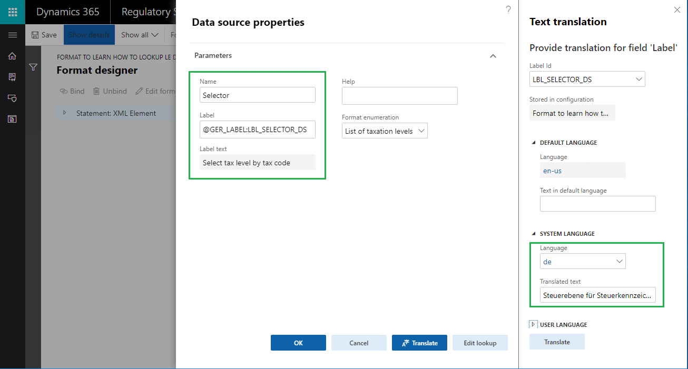
Hinzufügen eines neues Felds, um die konfigurierte Suche zu verarbeiten
Erweitern Sie das Element Model.Data.
Wählen Sie das Element Model.Data.Summary aus.
Wählen Sie Hinzufügen aus.
Wählen Sie das Feld „Funktionen/Berechnet“ aus.
Geben Sie im Feld Name LevelByLookup ein.
Wählen Sie Formel bearbeiten aus.
Geben Sie im Formularfeld Model.Selector(Model.Data.Summary.Code) ein.
Wählen Sie Speichern.
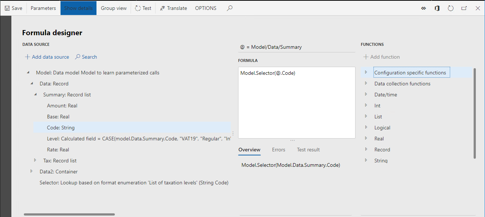
Schließen Sie die Seite Formel-Editor.
Wählen Sie OK.
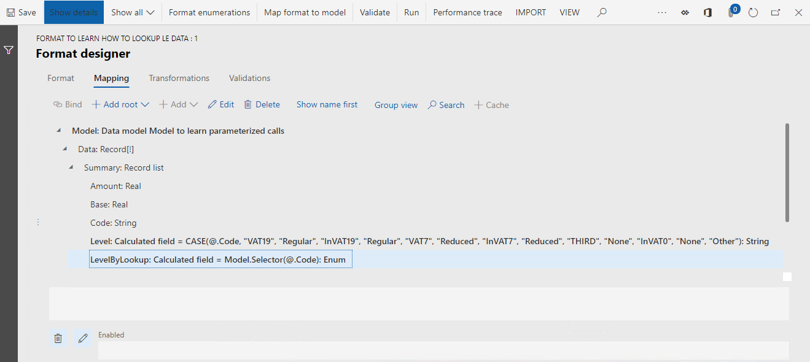
Beachten Sie, dass das berechnete Feld LevelByLookup, das Sie hinzugefügt haben, die Besteuerungsstufe als Wert der Formatenumeration Liste der Besteuerungsstufen für jeden zusammengefassten Steuertransaktionsdatensatz zurückgibt. Der Steuercode des Datensatzes wird an die Suchdatenquelle Model.Selector weitergegeben, und die Gruppe von Regeln für diese Datenquelle wird verwendet, um die korrekte Besteuerungsstufe auszuwählen.
Hinzufügen einer neuen Datenquelle, die auf einer Formatenumeration basiert
Danach fügen Sie eine neue Datenquelle hinzu, die auf die Formatenumeration verweist, die Sie zuvor hinzugefügt haben. Werte dieser Datenquelle werden später in einem EB-Formatausdruck verwendet.
- Wählen Sie Stamm hinzufügen aus.
- Wählen Sie Formatenumerationen\Enumeration aus.
- Geben Sie im Feld Name TaxationLevel ein.
- Wählen Sie im Feld Formatenumeration die Option Liste der Besteuerungsstufen ein.
- Wählen Sie Speichern.
Ändern eines vorhandenen Felds, um mit der Verwendung der Suche zu beginnen
Danach ändern Sie das vorhandene berechnete Feld, sodass es die konfigurierte Suchendatenquelle verwendet, um je nach Steuercode den korrekten Besteuerungsstufenwert zurückzugeben.
Wählen Sie das Element Model.Data.Summary.Level aus.
Wählen Sie Bearbeiten aus.
Wählen Sie Formel bearbeiten aus.
Beachten Sie, dass der aktuelle Ausdruck des Felds Model.Data.Summary.Level die folgenden hartcodierten Steuercodes enthält:
CASE (@.Code, „VAT19“, „Regulär“, „InVAT19“, „Regulär“, „VAT7“, „Reduziert“, „InVAT7“, „Reduziert“, „THIRD“, „Keine“, „InVAT0“, „Keine“, „Sonstige“)
Geben Sie im Feld Formel CASE(@.LevelByLookup, TaxationLevel.'Reguläre Besteuerung', „Regulär“, TaxationLevel.'Reduzierte Besteuerung', „Reduziert“, TaxationLevel.'Keine Besteuerung', „Keine“, „Sonstige“).
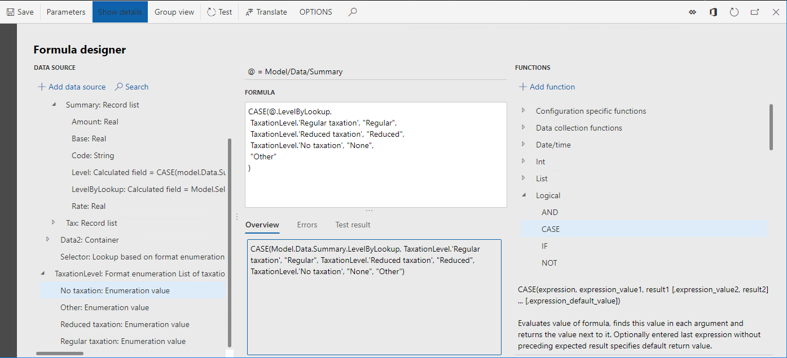
Beachten Sie, dass der Ausdruck des Felds Model.Data.Summary.Level jetzt die Besteuerungsstufe zurückgibt, die auf dem Steuercode des aktuellen Datensatzes und der Gruppe von Regeln basiert, die ein geschäftlicher Benutzer in der Suchdatenquelle Model.Data.Selector konfiguriert.
Wählen Sie Speichern.
Schließen Sie die Seite Formeldesigner.
Wählen Sie OK.
Wählen Sie Speichern.
Seite Format-Designer schließen.
Abschließen der Entwurfsversion eines abgeleiteten Formats
- Wählen Sie im Inforegister Versionen die Option Status ändern aus.
- Wählen Sie Abgeschlossen aus.
- Wählen Sie OK.
Exportieren der abgeschlossenen Version eines bearbeiteten Formats
- Wählen Sie in der Konfigurationsstruktur das Element Format zum Ermitteln der Vorgehensweise bei der Suche von Daten zu juristischen Personen aus.
- Wählen Sie im Inforegister Versionen den Datensatz mit dem Status Abgeschlossen aus.
- Wählen Sie Wechselkurs aus.
- Wählen Sie Als XML-Datei exportieren aus.
- Wählen Sie OK.
- Der Webbrowser lädt eine XML-Datei Format zum Ermitteln der Vorgehensweise bei der Suche von Daten zu juristischen Personen herunter. Speichern Sie die Datei lokal.
Wiederholen Sie die Schritte in diesem Abschnitt für übergeordnete Elemente des Formats Format zum Ermitteln der Vorgehensweise bei der Suche von Daten zu juristischen Personen und speichern Sie die folgenden Dateien lokal:
- Format zum Ermitteln parametrisierter Anrufe.xml
- Zuordnung zum Ermitteln parametrisierter Aufrufe.xml
- Modell zum Lernern parametrisierter Aufrufe.xml
Um mehr darüber zu erfahren, wie Sie das konfigurierte EB-Format Format zum Ermitteln der Vorgehensweise bei der Suche von Daten zu juristischen Personen für die Einrichtung von Gruppen von Steuercodes verwenden, die von juristischen Personen abhängen, um Steuertransaktionen anhand von unterschiedlichen Besteuerungsstufen zu filtern, führen Sie die Schritte im Thema Einrichten von Parametern eines EB-Formats pro juristischer Person aus.
Zusätzliche Ressourcen
Formeldesigner in der elektronischen Berichterstellung
Einrichten von Parametern eines EB-Formats pro juristischer Person